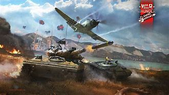

War Thunder is a free-to-play vehicular combat multiplayer video game developed and published by Gaijin Entertainment. Announced in 2011, it was first released in November 2012 as an open beta with a worldwide release in January 2013; it had its official release on 21 December 2016.[11][7] It has a cross-platform format for Microsoft Windows, macOS, Linux, PlayStation 4, Xbox One, PlayStation 5, Xbox Series X/S, Oculus, and Vive. A spinoff game called War Thunder Mobile (also known as War Thunder Edge[12]) was released in May 2023 for Android, with an iOS version released in August 2023. Developed as a "flying simulation game", it was previously named War Thunder: World of Planes,[13] but due to its similarity with Wargaming's World of Warplanes, it was changed to its present name in 2012.[14][15] Initially, Gaijin claimed after the game was announced that it was an April Fools joke before confirming its existence in June that same year.[16] War Thunder won several awards following its release, winning Best Simulation Game at the Gamescom 2013 Awards as well as winning Best Game, Best Developer, Best Technology and Best Sound at the KRI 2013 Awards.[17][18] In 2019, War Thunder was among the most played games on Steam with over 25,000 concurrent players on Steam only.[19] In 2023, the number of people playing War Thunder simultaneously on Steam only was over 75,000 on average and peaked at 114,806 on Nov 05, 2023.[20] These numbers do not include console players or PC players using the Gaijin.net service. As of November 1, 2022, War Thunder had over 70 million registered players on all platforms combined, out of which 160,000 play concurrently.[21]
